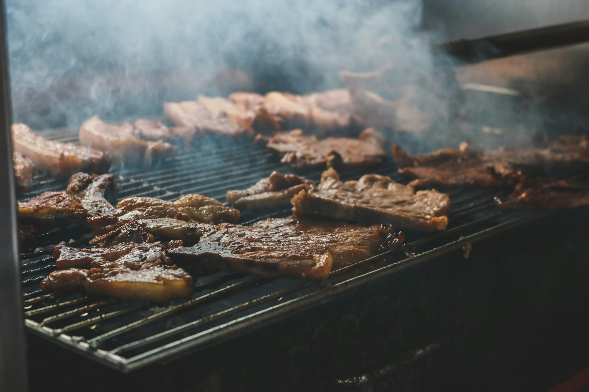

WILLKOMMEN IN DER GRILL RANCH
Guter Grill.
Gute Zeit.
Mitten im Grünen.
Grillspezialitäten & Balkanküche in Deutsch-Wagram. Für den großen Hunger und die kleinen Auszeiten.

etwas Gutes?Wir freuen uns auf Sie.
01 / GUT ESSEN
Zusammenkommen.
Und genießen.
Herzhaft vom Grill oder ein Lieblingsgericht aus der Balkanküche: Entdecken Sie unsere Auswahl und finden Sie schon vor Ihrem Besuch, worauf Sie Appetit haben.
Zur vollständigen Speisekarte02 / MEHR ALS EIN RESTAURANT
Bleiben Sie ruhig
ein bisschen länger.
Ein Essen wird zum Ausflug.
Direkt hier bei uns auf der Ranch.
Eine Runde ins Grüne.
Unsere Minigolfanlage liegt am Radweg „Dampfross“, umgeben von Wald. Mit Flutlicht bis 22 Uhr bespielbar.
Minigolf entdecken 02Tierisch gute Nachbarn.
Esel, Lamas, Minischweine und mehr: Lernen Sie unsere Tiere kennen. Auch Ihr Hund ist willkommen.
Unsere Tiere kennenlernen 03Ihr Anlass. Unsere Ranch.
Geburtstag, Hochzeit oder Firmenfeier: Genießen Sie besondere Momente in gemütlicher Runde.
Eine Feier planen03 / GEMEINSAM FEIERN
Die besten Erinnerungen
entstehen am selben Tisch.
Ob Familienfest oder Weihnachtsfeier: Wir besprechen mit Ihnen das passende Menü für Ihre Gesellschaft.
Feier unverbindlich anfragen04 / AUF BALD IN DER RANCH
Ihr Weg zu
einer guten Zeit.
An der B8 und doch in der Natur. Auch über Radwege erreichbar – etwa 15 Gehminuten von der S-Bahn entfernt.
Route planenÖffnungszeiten
Mittwoch bis Montag 11:00–22:00 Uhr
Dienstag Ruhetag
Hier finden Sie uns
Grill Ranch
Angerner Bundesstr. 1024
2232 Deutsch-Wagram
WIR HALTEN IHNEN GERNE EINEN PLATZ FREI
Hunger auf Grill Ranch?
Rufen Sie uns an oder senden Sie Ihren Terminwunsch über das Kontaktformular.
Ihre Nachricht ist eine Anfrage. Ihr Tisch ist nach unserer Bestätigung reserviert.